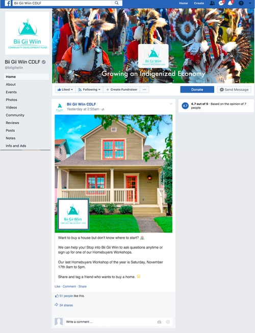

Bii Gii Wiin - MCAD Collaboration
Methods Used
- Agile Scrum
- Project Management
- SWOT Analysis/4P’s
- Business Model Canvas
- Focus Groups
- Phone Interviews
- Social Media Analysis
Tools Used
- Asana
- Trello
- PowerPoint
Products Created
- Information Guide
- Customer Experience Map
- PowerPoint
The Project
As a part of my Project Management and Client Studio classes, my team of four and I were assigned to use an agile work process to help Bii Gii Wiin – a non-profit dedicated to providing financial literacy and resources to American Indian communities in Minnesota – with 3 tasks:
- To evaluate how to increase awareness of the organization within the local community.
- To identify the typical customer journey.
- To strategize how to retain customers within the organization.
After conducting external, internal, and first-person research, my team was able to provide a list of recommendations for the client. We gave a presentation which included suggestions for improving social media, an information guide template to provide for their customers, a customer experience map to use internally in the company which highlights how customer hear about, explore, and then use Bii Gii Wiin’s services, and advice on how to streamline data gathering and analysis.
Included in this presentation was a PowerPoint that highlight the information we presented to our client, the business analysis tools we used, and additional resources we gathered that we did not mention outright in our presentation. Click on the image below to access the PowerPoint:

My Tasks – Overview
To make our completion of our tasks as efficient as possible, we decided to split up our work. The primary tasks I completed were to:
- Conduct external research about the American Indian population to have context for working with this community.
- Lead two separate focus groups to generate first-person research and gain insight into Bii Gii Wiin’s clients.
- Review Bii Gii Wiin’s current social media posts on Instagram and Facebook and provide recommendations.
- As the Scrum Master, continually check-in with the group members to ensure group harmony and that everyone felt heard.
My Tasks Part I – External Research
Since all of the members of my team were Caucasian and we were working with a minority group that has been historically colonized by our ethnic group, it was imperative for us to have a thorough understanding of this history of oppression and learn about how to respectfully approach members of the Native community.
Our professor provided us with some secondary resources which he had gathered from prior personal work with American Indians. My task was to read through some of the material and take notes on useful historical context and other information to share with my teammates to help us understand why there was a drop in return rates for Bii Gii Wiin’s services and to increase diplomatic success when later working with members of the community themselves.
Of the external research I did, I learned several important facts:
- Unlike other racial minorities, Native Americans were assimilated, not excluded. This meant that it was important for us to acknowledge the differences in cultural views and practices as valid, equal, and separate from our personal identities.
- Although it is common for them refer to themselves collectively as “American Indians,” “Indian” is still a colonist term. Identity is based off of individual tribes, and this tribal identity is often then based on what land they live on (and has been historically stolen). From this, we learned that we had to keep in mind that Bii Gii Wiin works with several different Native communities, so their perspectives and beliefs would not all be the same.
- Due to historical reasons, there are more tribes in the United States than are officially registered. Because of this, when we looked at data pertaining to American Indians, we knew some of the numbers may be off.
- For effective conversation, both sides need to be vulnerable. This meant that we had to acknowledge our historical ethnic identity as oppressors and have compassion when asking questions, and they had to be honest about the historical and contemporary factors for their decision to work with Bii Gii Wiin and the personal and cultural challenges they currently face.
This information was then helpful for completing the second part of my tasks – conducting focus groups.
My Tasks Part II – Focus Groups
In order to help determine why clients were not coming back to use Bii Gii Wiin’s services, it was essential for our team to conduct primary research and hear from the clients themselves. One of the ways we decided to do this was through focus group with the nonprofit’s clients, and it was my task to lead this endeavor.
Before starting the focus groups, my team and I brainstormed a list of questions to ask the participants and then sorted them into the priority of which ones were the most important to have answered. Before finalizing our questions, we met with a professional researcher who advised us to have no more than five questions as it can take time to have everyone respond. After meeting with her we further refined our list to these questions:
- How did you hear about Bii Gii Wiin?
- What services have you used with Bii Gii Wiin?
- What services would you recommend that Bii Gii Wiin provide?
- What are the barriers to using Bii Gii Wiin’s services?
- What is the best way for Bii Gii Wiin to contact you?
While we wrote our questions, our client set up the focus groups. Our original intention was to have three to five participants at each session, but only one person came to the first session and only two people came to the second one, making a total of three people interviewed over the course of two sessions. I asked the questions, making sure to give everyone enough time to fully answer, while two of my team members wrote notes. After the sessions we compiled our notes to draw some preliminary conclusions.
Overall, we learned several important pieces of information. One of the clients had learned about Bii Gii Wiin thorough specific members of the American Indian community, while the others had learned about the company through general services offered by the community. They learned about these services in high school or when they were older. All of them had used the credit services, but only one of them had used other services and some of them did not know about the other resources offered by Bii Gii Wiin. They all mentioned that they wanted more contact from the company, and in particular would like a small book of financial terminology to be able to reference in the future. Their barriers in general were time management (especially with having children to take care of) and prioritizing financial management. The way they wanted to be primarily contacted was through text or email, and two of them stated specifically that they did not use Facebook.
The conclusions that we drew from this information were:
- Bii Gii Wiin customers learned about the company through the American Indian community. They specifically mentioned one of the company members by name several times and appreciated how involved she was in the community even outside of Bii Gii Wiin.
- They wished they had learned about Bii Gii Wiin and had more financial literacy earlier in life.
- Most of them only knew about the credit card services, and did not know about the homebuyer education or business consulting services.
- The barriers to using their services was the time commitment and personal prioritization. A small reference book or another take-home of financial resources would be helpful to have since sometimes they are unable to attend longer-time-commitment workshops and services.
- They would like to be contacted by the company more, but not only through Facebook.
My teammates then used the knowledge we gathered to start creating the information guide template and customer experience map, while I analyzed the company’s social media usage.
My Tasks Part III – Social Media
At the time we were conducting our research, Bii Gii Wiin used Facebook as their sole social media channel. As I had prior experience on social media optimization from an internship, I volunteered to analyze their current usage of this social media and provide recommendations on how to improve their content.
I went to their Facebook page and noted how many likes, posts, type of content, and general aesthetic they had. Overall they had over 500 likes, an intermittent posting schedule, content reminding clients of upcoming classes and workshops, and a non-cohesive aesthetic (the viewer would not know from one picture that the content was from Bii Gii Wiin).
Our team also knew from prior meetings with Bii Gii Wiin that one of their major struggles was lack of time. With this in mind, I provided the company with general guidelines of how to maximize the effectiveness of their current social media with their limited time. With this information in mind, the general recommendations I provided were:
- Use high-quality images consistent with the current Bii Gii Wiin branding so Facebook users would know who the post was from.
- Use brief, concise descriptions so people will read their posts instead of skipping over them.
- Use emojis as people are more likely to read content that includes visuals.
- Ideally post 1x day so Facebook users would be constantly reminded about Bii Gii Wiin.
- Add Facebook Analytics to track user information such as best time of day to post, most favorited content, and overall user engagement with posts.
- Create an Instagram account or other social media channels as well to increase likelihood of potential clients learning about their services.
- Use an automated social media posting service and schedule a time one a week to batch upload posts to the service to make it easier to remember to post something.
Along with these recommendations I created a mockup of an example Facebook post to demonstrate how to use this advice in their future social media work.
My Tasks Part IV – Scrum Master
As the group’s Scrum Master, it was my job to ensure group harmony and make sure that everyone felt their input was heard.
Fortunately, my teammates and I had known each other for several years and already worked well together. No one had any issues working with each other and our communication went smoothly, especially since we were such a small team. In the future I would be interested in learning more about the Scrum Master role and gain some experience working with larger teams.